Pull up a chair. It’s about to get weird.
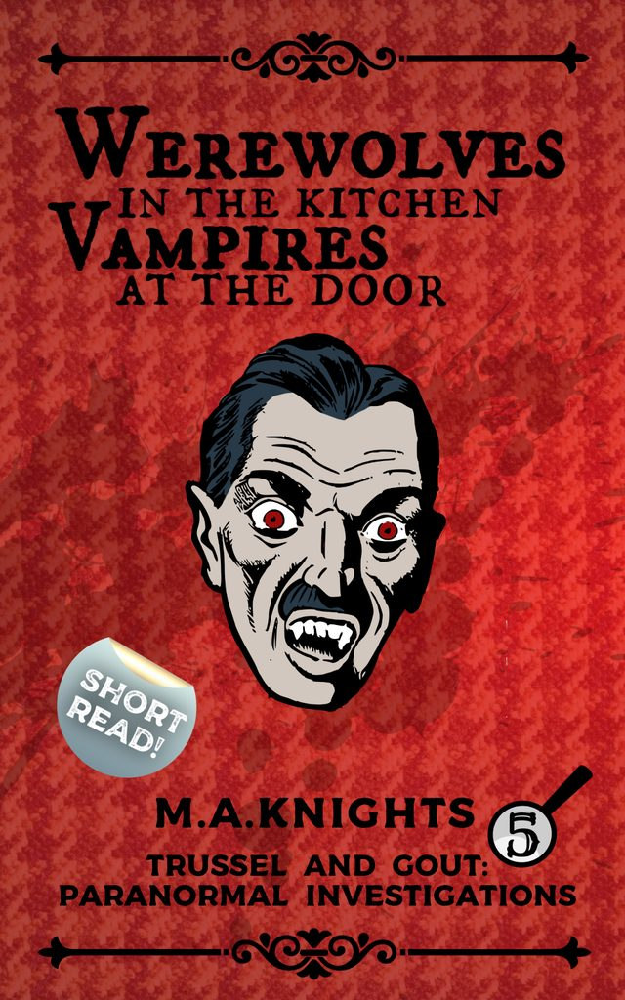
Werewolves in the Kitchen, Vampires at the Door
Trussel & Gout, book 5. Edwardian paranormal investigations: a baker, an occult detective, and danger kept at a polite distance.
Trussel & Gout
Cosy paranormal comedy set in Edwardian Britain: odd clues, opinionated folklore, and the occasional supernatural inconvenience nobody asked for.
Seven books so far, each one a short read. Grab a cuppa, maybe a biscuit or two, and dive right in.
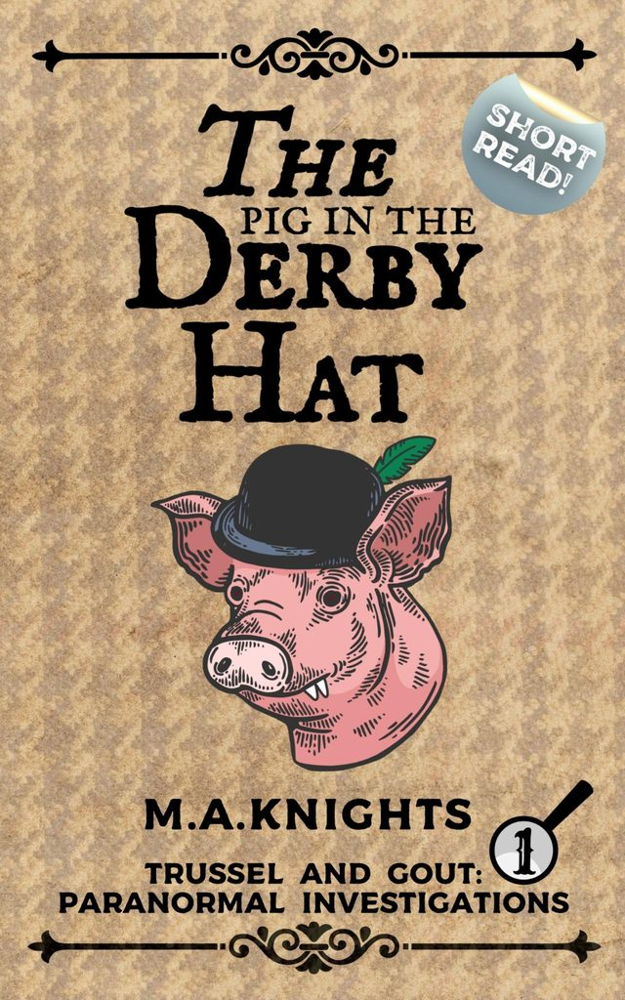
Book 1, and the place to start.
Find it in your shop- 1. The Pig in the Derby Hat
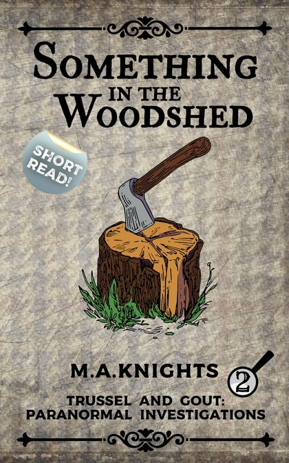
2. Something in the Woodshed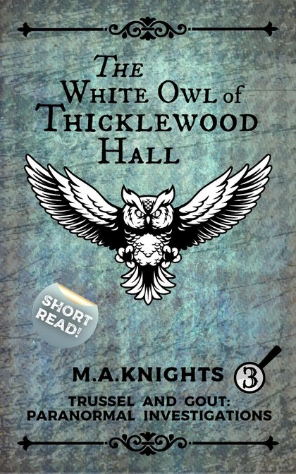
3. The White Owl of Thicklewood Hall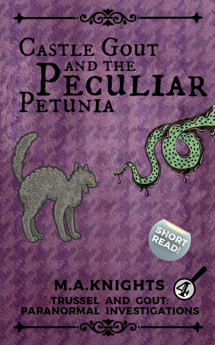
4. Castle Gout and the Peculiar Petunia- 5. Werewolves in the Kitchen, Vampires at the Door
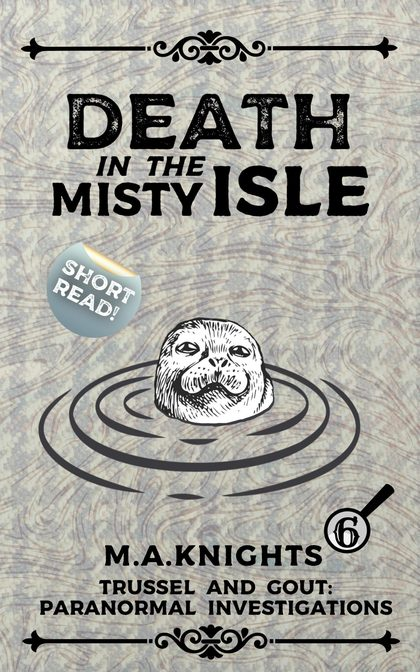
6. Death in the Misty Isle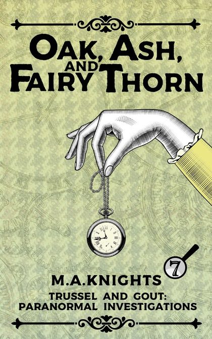
7. Oak, Ash, and Fairy Thorn
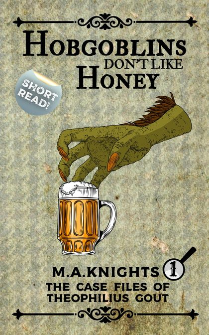
Hobgoblins Don’t Like Honey, free
A short, comedic way into the Trussel & Gout world: folklore, odd clues, and the sort of supernatural nuisance that turns up precisely when you’ve got tea on the go.
Send me the free bookNew book, who dis? Autumn Tales is out now.
See it on Instagram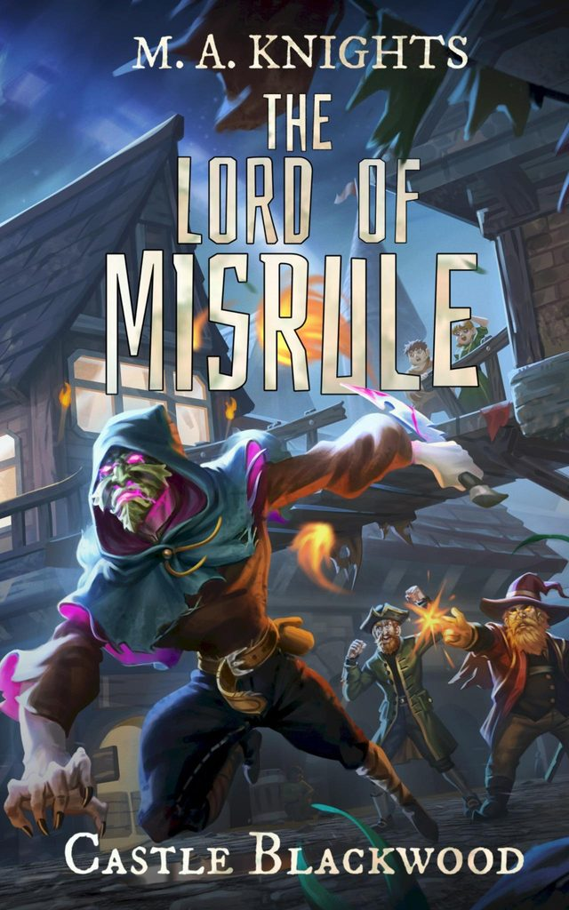
Castle Blackwood
The Lord of Misrule comes back on 21 December, the Longest Night.
Old magic, older grudges, and seasonal rites nobody quite remembers agreeing to, all refusing to stay buried. It’s still comedy at the core: M.A. Knights with the lights turned down, not a different author.
The new edition has been professionally re-edited. If you’ve read it, you’ll know why that date matters.
Trussel & Gout, Special Edition Vol. 1
The series, properly dressed up: hand-drawn chapter headings, full-colour illustrations, and proper endpapers. It comes to Kickstarter early in 2027.
Sign up and you’ll hear the launch date, pricing and early-bird tiers before anyone else.
No pledge, nothing to pay.
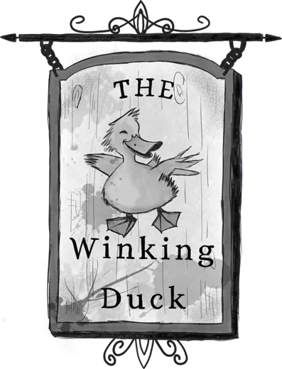
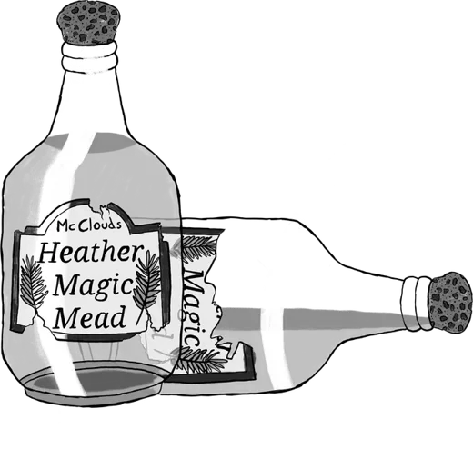
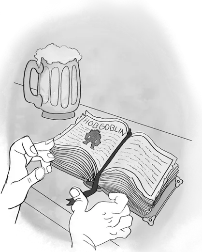
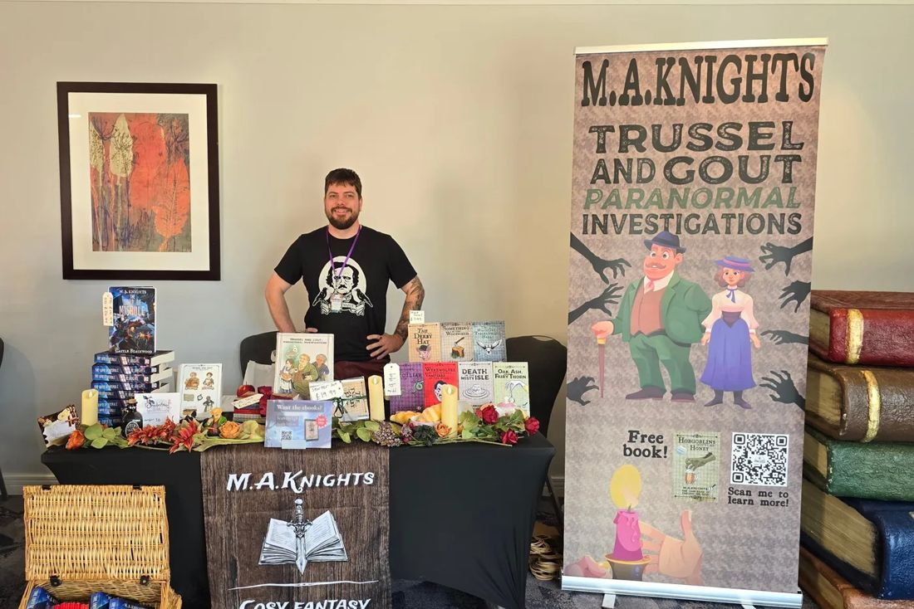
Signed copies, in person
I spend a fair chunk of the year behind a table covered in books, bunting and at least one thing that shouldn’t be there.
- 8NovScribe FestSedgebrook Hall, Northampton. Sunday 8 November.
- 21NovCoventry Book ExtravaganzaAlbany Theatre, Coventry. Saturday 21 November.
- Signed paperbacks of both series
- Personalised dedications, no extra charge
- Card, and cash if you’re old-fashioned about it
This year so far: Geek Mart Birmingham, Manchester Lit Con, Northampton Comic Con, Milton Keynes Indie Book Fair and Lichfield Book Extravaganza.
All dates, and booking me for your eventMore, more often
Two serials, a new chapter of each every week on Patreon.
Goodboy
A LitRPG-adjacent serial, posted chapter by chapter. Shaped partly by questions from TikTok quiz nights, so you can blame that lot if it gets weird.
Read Goodboy on PatreonSidequest
A comedic fantasy serial, fresh this autumn. Same voice, new cast, updated weekly.
Read Sidequest on PatreonThat neurospicy fantasy books guy!
Hello. I’m M.A. Knights.
After degrees in Countryside Conservation and Climate Change, I came to a quiet but decisive conclusion: I am not, in fact, a scientist. Something to do with numbers. And memory. And an overwhelming preference for dragons.
So I write funny British fantasy, from cosy paranormal mysteries to darker folklore. My books tend to involve found family, magic that complicates matters more than it resolves them, and tea. Frequently.
Should you encounter anything peculiar while reading, do not be alarmed. It is almost certainly meant to be there.
Published by White Harp Publishing.
Pull up a chair. It’s about to get weird.